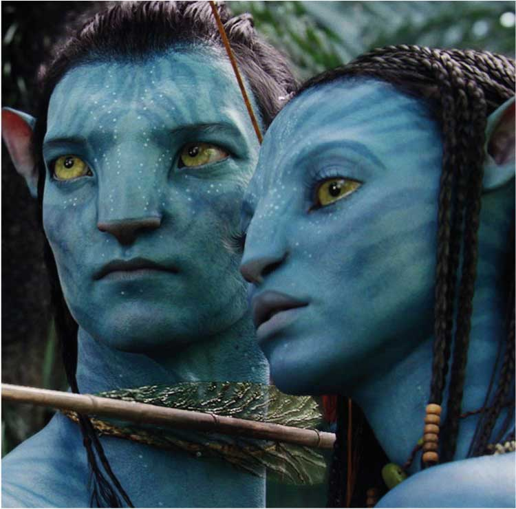
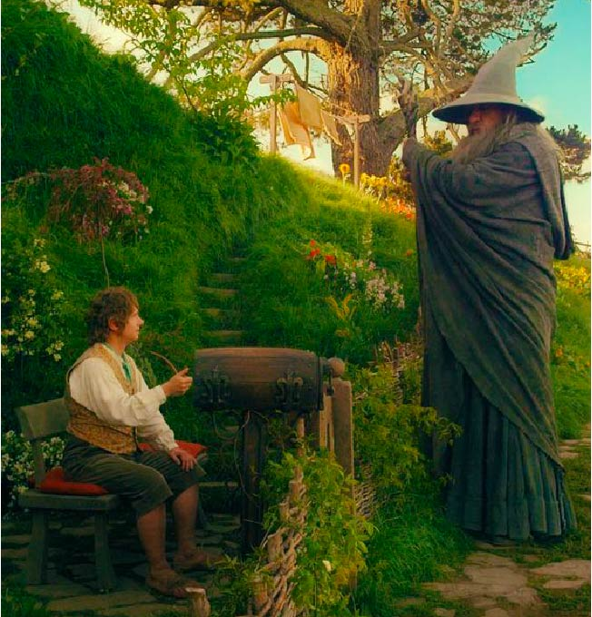
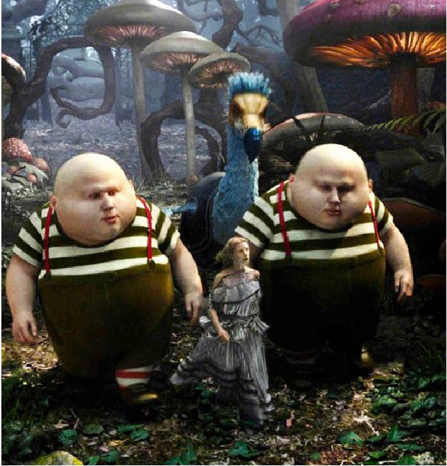

Marta Povoroznyk
Best movies of all time

Avatar
This is a fantasy story set on a distant planet - an old-fashioned jungle adventure with an atmospheric environment, where events begin to reach the mythical level of storytelling. Jake Sully (Sam Worthington) is a former Marine injured in a wheelchair. Jake's brother was a scientist who was preparing to go to the planet Pandora, where earthlings are mining an extremely valuable substance. Brother on Pandora was to settle in the body of the so-called avatar - an artificially created Pandora aborigine. But Jake's brother died as a result of an attack by some punks, and now the corporation that has signed a contract with the scientist offers Jake to replace his brother, otherwise the huge investment in the avatar will go to waste. Jake agrees and flies to Pandora. As you know, Cameron worked on this project for many years - his previous feature film "Titanic" was released in 1997. Cameron wrote the script for "Avatar" back in 1995, but at that time there was no technical means capable of realizing his idea. From a scenario point of view, "Avatar" is, say, a fantastic fairy tale, in which various genres are combined in reasonable proportions: drama, action, romance and even a little comedy.

The Hobbit
The Hobbit is a good story, and embellishments and exaggerations, whether they like it or not, are an integral part of the adaptation of Peter Jackson, Fran Walsh, Philippa Boyens, and Guillermo del Toro. not the first part of two, but the beginning of a trilogy), and on the screen: events that took place in sunny Middle-earth 60 years before "The Lord of the Rings”. Through the efforts of the the wizard Gandalf, the hobbit from the Shire Bilbo Baggins is embroiled in an adventure and goes on a journey with a small detachment of dwarves, whose goal is to return their treasures and their homeland, which were captured by the dragon Smaug. Meanwhile, evil returns to Middle-earth.

Alice in Wonderland
Tim Burton's Alice in Wonderland, released in 2010, created an unprecedented sensation. Despite the fact that this film is a loose interpretation of the tale of Lewis Carroll, it was still a commercial hit. Going to the ball, the girl Alice, eighteen years old, had no idea how it would turn out. First, it turned out that the young and very similar to an enthusiastic rabbit lord intends to make her an offer, which is quite difficult to refuse a girl left without a father. Secondly, it turned out that if you do not want to marry the lord rabbit at all, you can just step aside and there will certainly be a hole where you can fall with relief - and there you will find a whole Magic Land. True, Alice chose not the best time for her visit: a battle is approaching between the Red Queen, who usurped power and her sister, the White Queen. To defeat the fierce Jabberwock helping the Reds, you need a Brave Warrior and for some reason everyone is sure that this is Alice, who does not want to swing a sword at all. Even worse, everyone is sure that Alice has already been in the Magic Land, although she herself does not remember this at all.